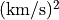
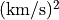
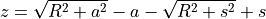
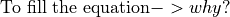

PIEMD
Set the potential profile to the type dPIE described in Eliasdottir et al. 2007.
In set_lens.c:set_dynamics(), the impact parameter is computed as such:
with  arcsec / . To obtain this value,
arcsec / . To obtain this value,  is converted to 648,000 arcsec.
is converted to 648,000 arcsec.
In file e_grad2.c, the 2nd derivatives of the gradient are computed as such with the core radius  and the cut radius
and the cut radius  in arcsec:
in arcsec:

From the 2nd derivatives, the convergence is computed in g_mass.c:computeKmass()

The theoretical expression taken from Eq. 7 in Limousin et al. 2005 is
and the critical mass is
By taking the ratio with , we find

Therefore the relation between Lenstool and the theory is
Which translates in velocity dispersion as
Note that the mass keyword corrects for this factor internally, and returns the theoretical convergence map.
We give an instance of dPIE potential:
potential 1
profil 81
x_centre 0.
y_centre 0.
ellipticite 0.
angle_pos 0.
core_radius_kpc 100.
cut_radius_kpc 1500.
v_disp 1000.
z_lens 0.2
end